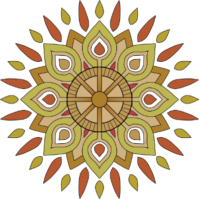

Appamāṇa Buddhist Community was founded to create mutually supportive conditions to practice the Buddha's teachings.
The purpose of the Appamana Buddhist Community is to create an expansive network of support to share Dhamma, offer material support and develop spiritual friendship. Appamāna is a Pāli word which mean 'measureless' or 'boundless'. It is the heart liberated from the suffering of harmful states.
Camperdown Memorial Park cnr. Church St & Federation Rd, Camperdown. Nearest stations: Newtown & Erskinville (10-15 min walk).
Join Venerable Pasanna for a community picnic. Learn about Appamāna Buddhist Community's plans for the future and share in friendship.
Bring a chair or rug to sit on, plate and cutlery, food to share.
Please note that Ven. Pasanna is allergic to cucumber and eggplant.